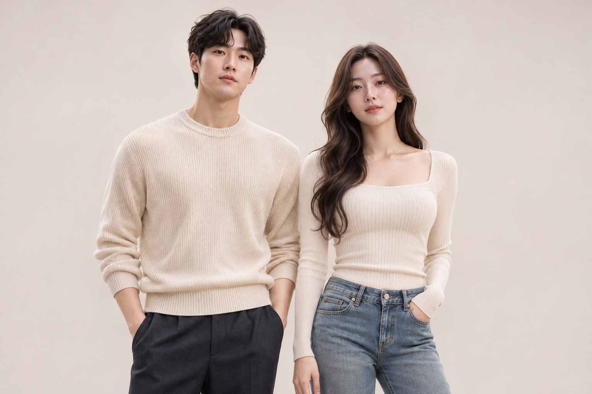

A1 STYLE STUDIO
내가 좋아할
다음 스타일.
자연스러운 인물과 의류의 질감.
다양한 방향과 스타일을 한눈에 비교하세요.
모든 이용자 무료 베타

A1 FASHION · STYLE STUDY스타일 이미지 미리보기 · 2DAI로 제작한 가상 인물·예시 의상 이미지입니다. 실제 판매 상품이나 사용자 사진의 합성 결과가 아닙니다.
내 사진으로 이어서 피팅하기
사진 분석부터 의류 사진 배치까지 이 페이지에서 이어갑니다. 개인 사진과 분석값은 기기 메모리에만 유지합니다.
3D는 별도 인체 샘플이며, 의류 사진은 내 사진 위에 2D로 겹칩니다. AI 자연 합성이나 실제 상품 3D 착용이 아닙니다.
01 / YOUR STYLE
마음에 드는 스타일을
골라보세요.
모델을 선택하고,
방향과 의상을 바꿔보세요.
스타일 이미지를 준비하고 있습니다.
02 / LOOK OPTIONS
다른 스타일도 만나보세요.
의상별 이미지는 정면만 준비되어 있습니다. 다른 방향은 기본 의상에서 확인하세요.
이 3D는 위 실사 이미지 속 인물과 다른 별도 샘플입니다. 원본 의상 한 벌이며 사진·체형 수치를 적용하지 않습니다.
3D 보기를 선택하면 모델을 불러옵니다.
무료 베타 · 내추럴 3D 인체
내추럴 3D 피팅룸
얼굴·피부·눈·머리카락·의상이 함께 있는 3D 인체 샘플입니다. 전신을 돌려 실제 형상과 표면을 확인해 보세요.
이 샘플은 사용자의 얼굴·체형을 복원한 결과가 아닙니다. 사진·분석값을 읽거나 전송하지 않습니다. 실제 판매 의류의 피팅·사이즈·착용감을 보장하지 않습니다.
한 손가락으로 회전 · 두 손가락으로 확대·축소
현재 인체 샘플에는 원본 의상 한 벌을 표시합니다. 교체 가능한 실제 의류 모델은 준비 중입니다. 기존 비교 모델에서는 예시 티셔츠 3종을 이용할 수 있습니다.
골격 변형은 glTF 스키닝 동작 검사입니다. 사용자 체형 복원이나 의류 핏 예측이 아닙니다.
로컬 전신 파일을 준비하고 있습니다.
WebGL 2가 필요합니다. 표시되지 않으면 기존 WebGL 1 체험을 이용할 수 있습니다.
기존 3D 체험으로 돌아가기